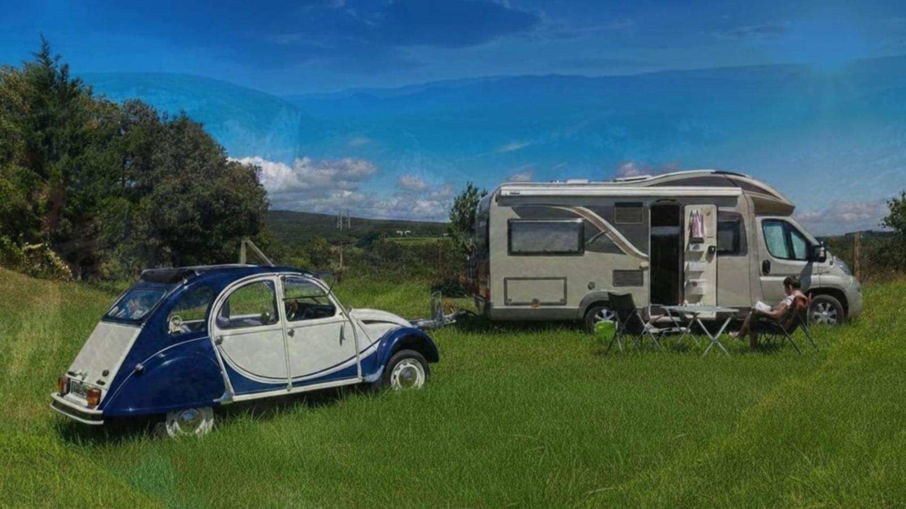
Le camping des Truffières, ouvert les 365 jours de l'année
Des emplacements de plus de 100 m² en terrasses, trois mobil-homes climatisés et l'horizon du Ventoux aux Alpes. À Saint-Marcel-d'Ardèche, à 4 km des Gorges.
Quel mois vous fait envie ?
Ici, on ne ferme jamais. Choisissez un mois : le soleil se place sur notre horizon, et vous voyez le tarif et ce qui vous attend sur place.
Tarifs 2026 publiés, au 15 du mois.
De l'espace, vraiment
Cinq hectares de terrasses, une centaine d'emplacements de plus de 100 m², à l'ombre ou au soleil. Les plus grands camping-cars et caravanes y tiennent sans manœuvre.
- Ombre ou soleil
- Électricité 4 à 10 A
- Wi-Fi gratuit
- Aire Flot Bleu
- Sanitaires chauffés l'hiver
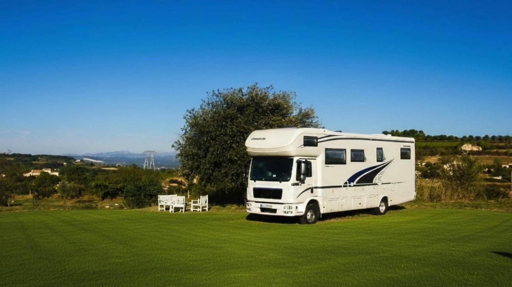
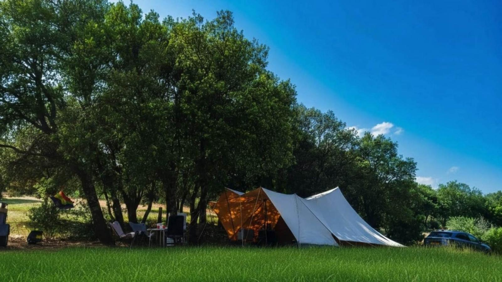
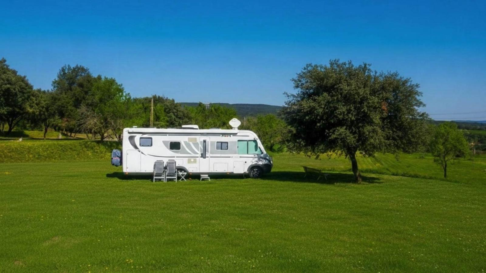
Arriver léger, poser ses valises
Trois mobil-homes climatisés pour 4 personnes, linge de lit fourni, terrasse au calme. Valérie et Stéphane les préparent eux-mêmes.
Une piscine sans toboggan, et c'est voulu
Un bassin de 17 × 7 m chauffé au soleil de juin à septembre, 1,30 m partout, et une pataugeoire flottante pour les bébés dès 6 mois. On peut s'y baigner jusqu'à la fermeture du Pub.
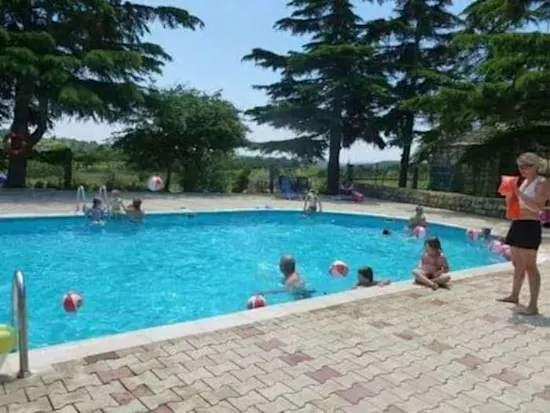
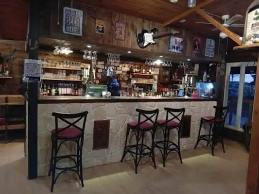
Le soir, on se retrouve au Pub
Bières d'Ardèche, vins de la vallée et cocktails maison, toute l'année. En juillet et août, L'Oustaou sert une cuisine de producteurs voisins sur sa terrasse ombragée.
Les Gorges à 4 km, le reste à portée de vélo
Canoë avec navette gratuite depuis le camping, grottes et avens, villages de caractère, marchés provençaux. Tout se réserve ou se prépare à l'accueil.
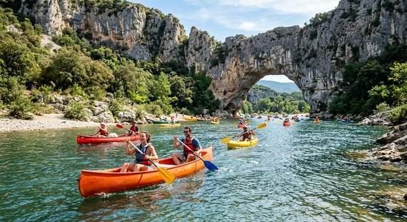
Descendre les Gorges
De 25 € à 90 €, matériel et navette compris, réservé aux vacanciers du camping.
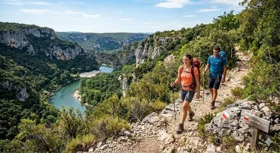
Marcher, pédaler
Sentiers au départ du camping, ViaRhôna à deux pas, circuits par QR code à l'accueil.
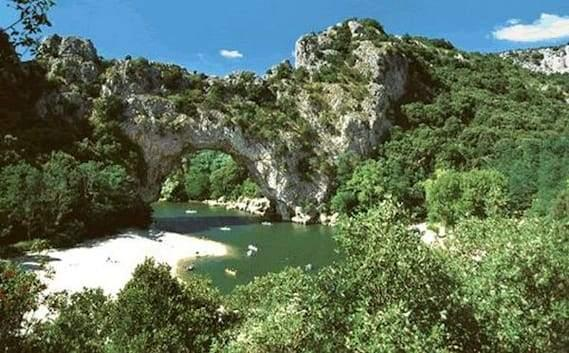
Grottes et avens
Grotte de Saint-Marcel à 6 km, Aven Marzal à 10 km, Chauvet 2 à 21 km.
4,4 sur 5, et ce qu'on retient
- La taille des emplacements
- L'accueil chaleureux
- L'épicerie et les commerces proches
- La vue du Ventoux au Mont-Blanc
- Le calme absolu
« Depuis 1966, notre priorité est de vous offrir des vacances qui vous ressemblent. »
Valérie et Stéphane Soulier, deuxième génération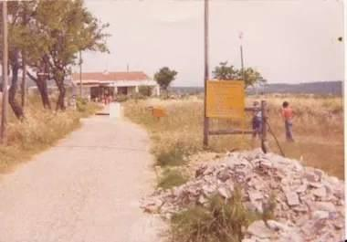
Emplacements de plus de 100 m²
Tentes, caravanes, camping-cars et vans : environ 75 parcelles détaillées sur le plan (53 « confort » et 22 « nature »), en terrasses, avec la vue sur la vallée du Rhône, le Ventoux et les Alpes. Jusqu'à 6 personnes par emplacement.
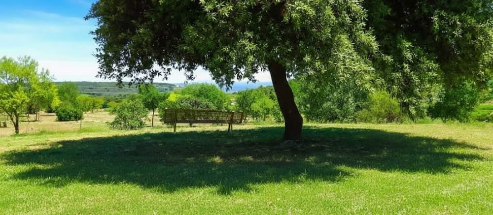
Tentes & bivouac
De vastes parcelles ombragées pour revenir à l'essentiel.
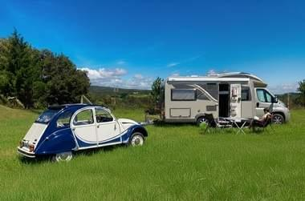
Caravanes & auvents
Terrains stabilisés, place pour l'auvent et la voiture.
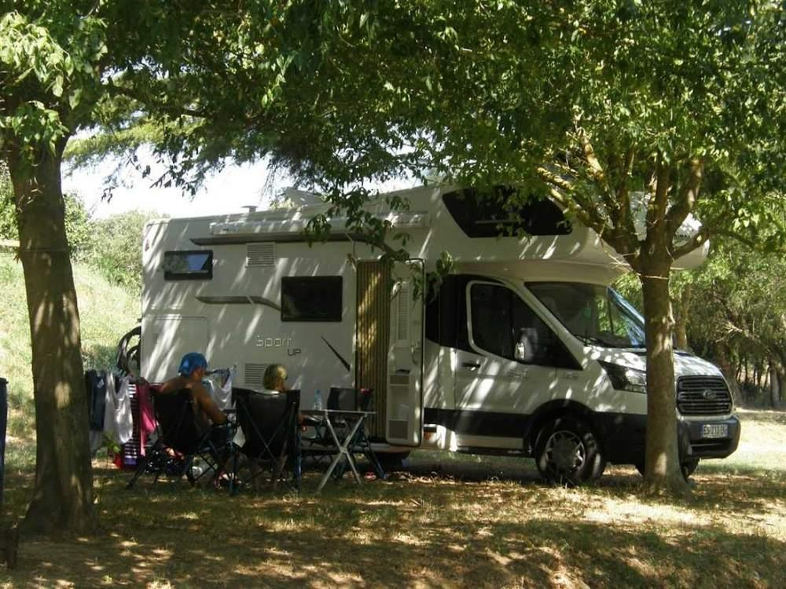
Camping-cars
Parcelles XXL pour grands gabarits, vidange Flot Bleu.
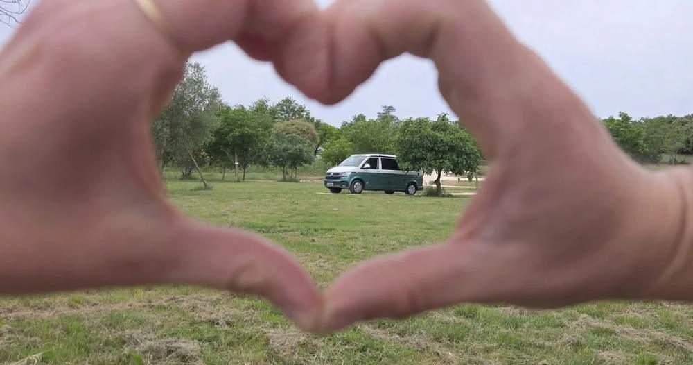
Vans aménagés
Liberté d'accès et sanitaires chauffés en toute saison.
Tout est compris dans le prix
- Piscine et eau chaude gratuites
- Wi-Fi haut débit
- Deux blocs sanitaires, dont un chauffé hors saison, cabine bébé, accès PMR
- Prêt de matériel pour les activités
- Aire de vidange Flot Bleu
- Points d'eau et tables de pique-nique en bois
Location de réfrigérateur possible. Ciel étoilé sans pollution lumineuse, offert.
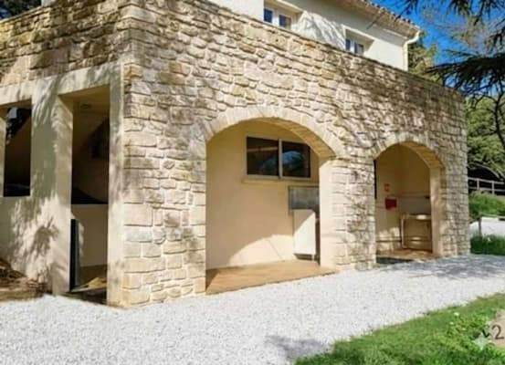
Le plan du domaine
Indiquez vos envies à la réservation : dans la mesure des disponibilités, l'équipe vous attribue l'emplacement le plus adapté.
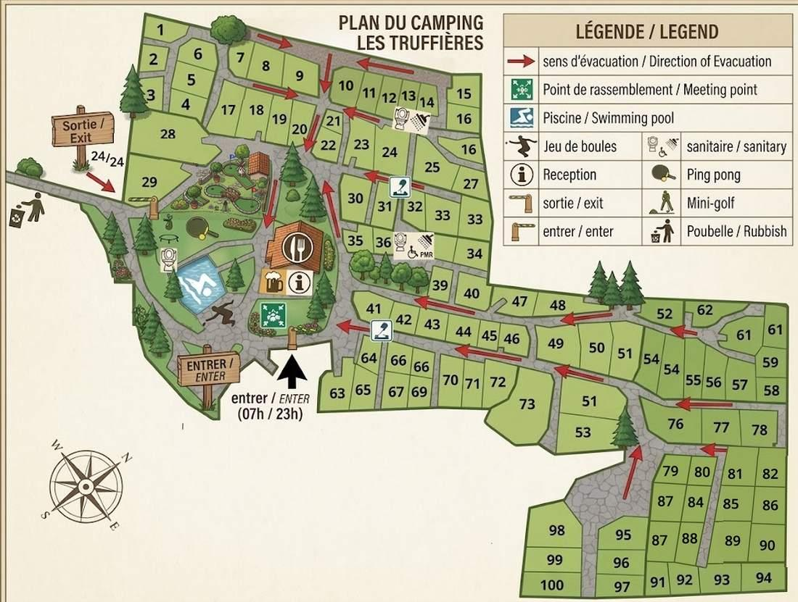
Plan repris tel quel du site actuel ; une version redessinée et traduite est prévue à l'installation.
Trois mobil-homes climatisés
Pour 1 à 4 personnes, deux chambres chacun, linge de lit fourni, non-fumeurs. Animaux non admis dans les locations. Arrivée dès 16 h, départ avant 10 h.
Tarifs 2026
Emplacements dès 22 € la nuit, mobil-homes dès 400 € la semaine. Piscine, Wi-Fi, sanitaires chauffés et prêt de matériel compris.
Emplacements nature
| Saison | 1 pers. + 1 véhicule | 2 pers. + 1 véhicule |
|---|---|---|
| Haute saison, du 27/06 au 04/09 | 28 € | 34 € |
| Basse saison, du 05/09 au 31/12 | 22 € | 28 € |
| Du 01/01 au 26/06 | Sur demande | |
Électricité et réfrigérateur
| 4 A (920 W) | 3,00 € / nuit |
| 6 A (1380 W) | 5,00 € / nuit |
| 10 A (2300 W) | 7,00 € / nuit |
| Réfrigérateur + 4 A | 10,00 € / nuit |
Suppléments
| Personne supplémentaire | 6,50 € / nuit |
| Animal domestique | 2,00 € / nuit |
| Visiteur (plus de 2 h) | 4,00 € |
| Voiture ou tente supplémentaire | 4,50 € / nuit |
| Taxe de séjour (+ 18 ans) | 0,66 € / jour |
| Frais de dossier | 5,00 € |
Mobil-homes Trigano et Watipi
| Période | La semaine |
|---|---|
| Hors saison, du 27/09 au 24/04 | 400 € |
| Basse saison, du 25/04 au 05/06 | 450 € |
| Moyenne saison, du 06/06 au 26/06 et du 06/09 au 26/09 | 550 € |
| Haute saison, du 27/06 au 10/07 et du 22/08 au 04/09 | 650 € |
| Très haute saison, du 11/07 au 24/07 et du 15/08 au 21/08 | 750 € |
| Le cœur de l'été, du 25/07 au 15/08 | 850 € |
Mobil-home Le Garrigue
| Du 14/06 au 27/06 et du 06/09 au 19/09 | 500 € |
| Du 28/06 au 11/07 et du 23/08 au 05/09 | 600 € |
| Du 12/07 au 25/07 et du 16/08 au 22/08 | 700 € |
| Du 26/07 au 15/08 | 800 € |
Cautions : 700 € (hébergement) et 120 € (ménage), non encaissées et rendues sous deux semaines. Frais de dossier location : 25 €. Taxe de séjour 0,66 € par jour et par adulte. Recharge de véhicule électrique interdite sur le camping.
Emplacement ou mobil-home ?
| Emplacement | Mobil-home | |
|---|---|---|
| Pour qui | Les amoureux du vrai camping et de la nature | Les familles qui veulent le confort d'une maison |
| Capacité | Jusqu'à 6 personnes | Jusqu'à 4 personnes |
| Surface | Plus de 100 m², ombragé | 31 à 41 m², 2 chambres |
| Sanitaires | 2 blocs, dont 1 chauffé l'hiver | Douche et WC séparés intégrés |
| Animaux | Bienvenus (sauf 1re et 2e catégories) | Non admis |
| Budget | Environ 28 € la nuit à deux | De 400 € à 850 € la semaine |
L'eau, le soleil, et c'est tout
Un bassin familial de 17 × 7 m, loin du tumulte des parcs aquatiques. Profondeur constante de 1,30 m, chauffage solaire de juin à septembre, transats face à la garrigue.
- Baignade tardive : ouverte jusqu'à la fermeture du Pub
- Pataugeoire flottante sécurisée, de 6 mois à 3 ans (norme NF EN ISO 25649-1, système breveté)
- Slips et boxers de bain uniquement, shorts interdits
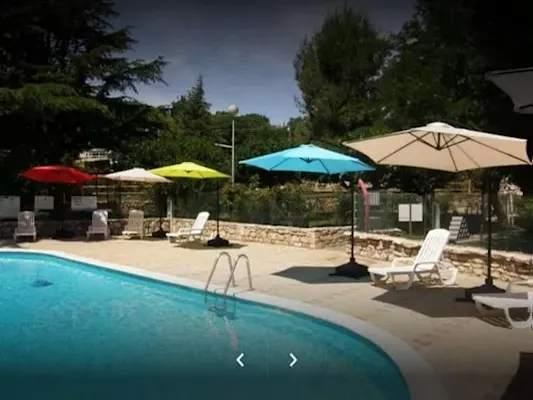
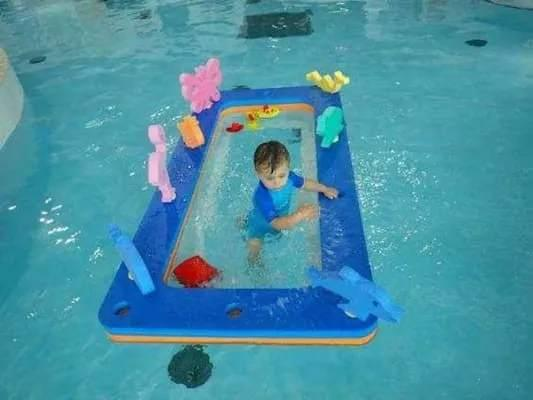
« Pas de parc aquatique bruyant, juste le bonheur simple de l'eau sous le soleil. »
Valérie et StéphaneSe baigner ailleurs
À 10 minutes : les plages surveillées de Saint-Martin-d'Ardèche et du Pont Cassé à Saint-Just.
The Pub, ouvert toute l'année
Une sélection courte de bières artisanales d'Ardèche, des vins régionaux et des cocktails maison. Salle climatisée, terrasse pour les apéritifs qui s'étirent.
Soirées à thème, dégustations et concerts acoustiques rythment la haute saison, dans le respect du calme de la nuit. Arrivée tardive ? Vos clés vous attendent au bar.
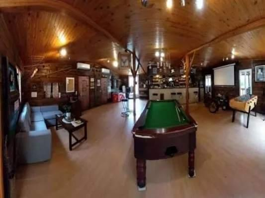
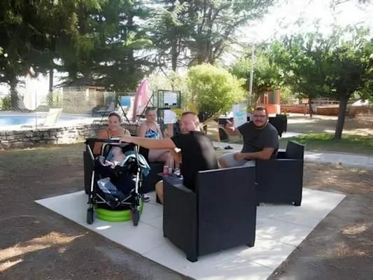
L'Oustaou, la table de l'été
Le restaurant annonce une fermeture pour 2026 et donne rendez-vous en 2027.
En juillet et août, une cuisine de terroir en circuit court, avec les maraîchers, éleveurs et vignerons d'Ardèche. Salle climatisée ou grande terrasse ombragée.
Les plats signatures : le nougat de foie gras aux fruits secs, la provençale de calargots, et des desserts en trompe-l'œil, comme « Juste une pêche ».
Recommandé par Restaurant Guru en 2024, partenaire Vignobles & Découvertes.
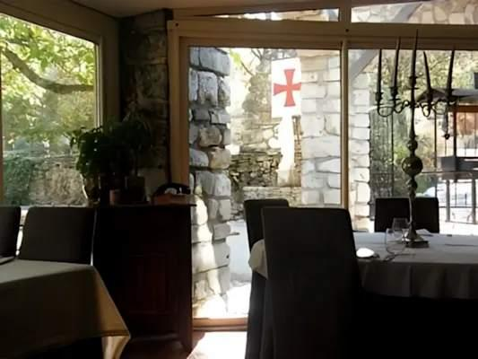
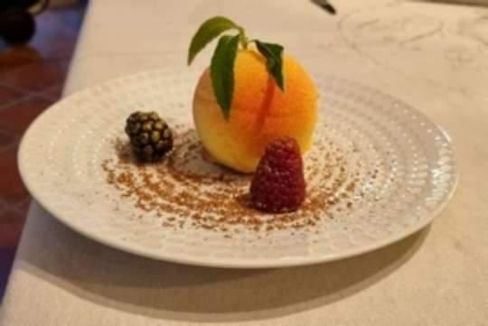
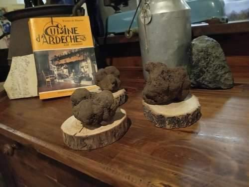
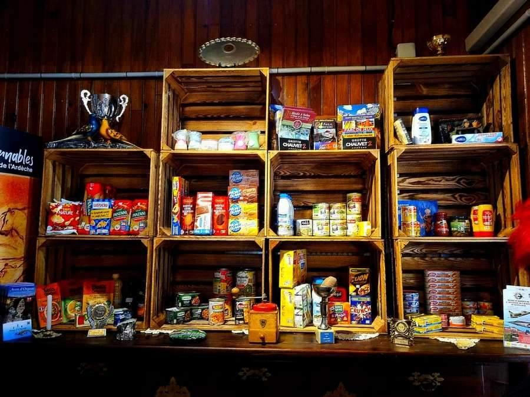
Et pour le reste
Une épicerie d'appoint à l'accueil. Supermarché, boulangerie et boucherie à moins de 3 km. Barbecues individuels interdits par arrêté préfectoral.
Le Sud-Ardèche depuis votre emplacement
Au cœur de la réserve naturelle des Gorges, à deux pas de la ViaRhôna. Grottes, villages, marchés, rivière : voici ce que l'équipe conseille le plus souvent.
Le guide des alentours
Le site actuel compte plus de soixante fiches locales (villages, restaurants, grottes, sorties d'autoroute, saisons). Elles sont toutes reprises, en français, à l'installation du nouveau site.
Au début, il y avait une ferme
Jean-François vendait sur les marchés provençaux. En 1966, avec l'accord de ses parents agriculteurs, il ouvre dix emplacements sur la ferme familiale. Soixante ans plus tard, la quatrième génération est là.
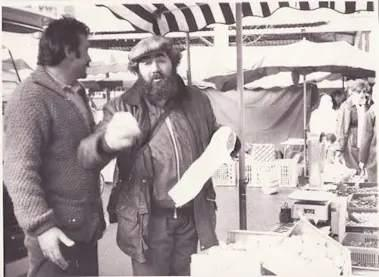
Dix emplacements sur la ferme de Saint-Marcel-d'Ardèche, l'un des tout premiers campings du département.
De 10 à 30, puis une centaine d'emplacements. Jean-François bâtit les terrasses avec ses enfants, avec une règle : ne pas dénaturer le bois.
Valérie, sa fille, et Stéphane Soulier reprennent le camping. Le Pub ouvre à l'année, puis le restaurant.
Le camping obtient ses trois étoiles.
Rénovation des locatifs, nouvelle signalétique, et un reportage de BFM sur le « vrai camping ».
La famille, en dessins
Les portraits de l'équipe, tels qu'ils figurent sur le site actuel.
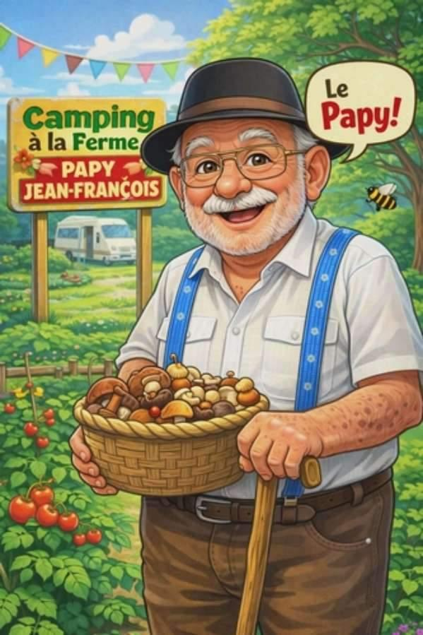
Jean-François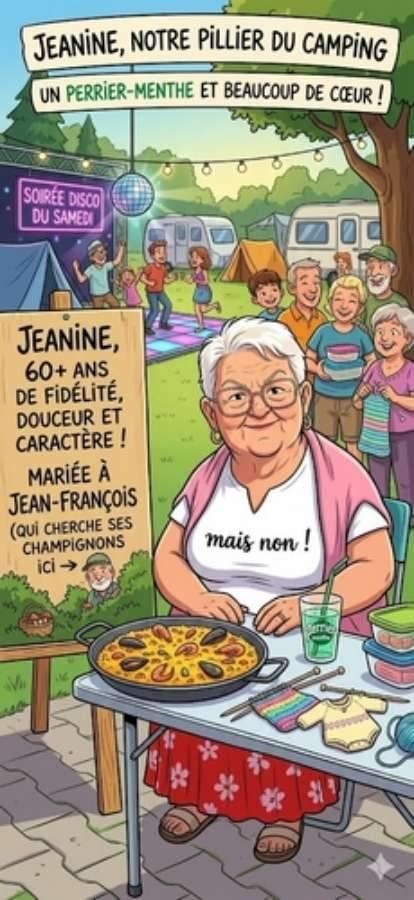
Jeanine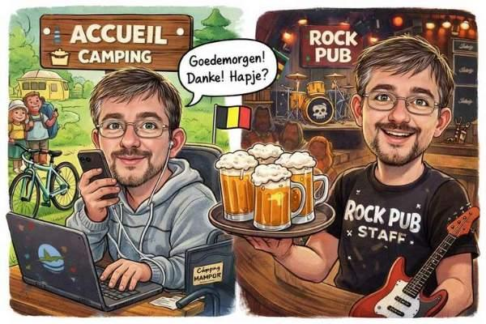
Joris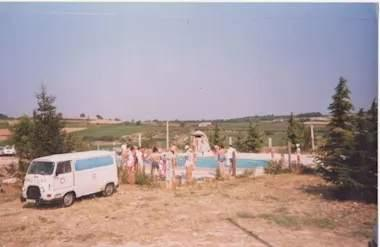
Ce qu'on fait pour le lieu
Éclairage solaire, réducteurs d'eau, récupération des eaux de pluie, tri et compost, poules et lapins pour les restes, bois et pierre pour construire, produits locaux à table.
Et un carré Sator, installé en 2024 dans le décor : à vous de le trouver.
Infos pratiques
- 252 Impasse Les Truffières, 07700 Saint-Marcel-d'Ardèche · GPS 44.344183, 4.604771
- +33 (0)4 75 04 68 35
- soulier.valerie@wanadoo.fr
- Accueil tous les jours, de 9 h à 12 h et de 13 h à 20 h (le plan du site actuel indique 9 h – 21 h). Arrivée tardive possible jusqu'à 23 h sur appel.
- Barrière à digicode de 7 h à 23 h, sortie libre 24 h/24.
- Carte bancaire (dès 15 €), espèces, chèques, chèques-vacances ANCV, virement.
Depuis l'A7 : sorties Montélimar-Sud, Bollène ou Orange. Attention à vélo, la montée finale est raide.
Vos questions
Ce que disent les vacanciers
Actualités
28/05/2024 · Reportage BFM. Le camping soutient la pétition « Sauvons le vrai camping » ; BFM est venu filmer et interroger les vacanciers.
2024 · Rénovations. Tous les locatifs rénovés, et une nouvelle signalétique.
2024 · Le carré Sator. Ce palindrome latin, connu depuis Pompéi (an 79), fait désormais partie du décor.
Documents
Mentions légales, confidentialité, cookies, règlement intérieur, CGV, sécurité, équipements bébé et animaux : repris intégralement du site actuel à l'installation.
- Mentions légales
- Règlement
- CGV
- Sécurité
- Kits bébé & animaux
- Confidentialité
Partenaires : Ardèche Découverte, Campings Ardèche, Camping2Be (Award 2024).
Votre séjour, chiffré tout de suite
Calculez une estimation d'après les tarifs 2026, puis envoyez votre demande à l'accueil. Réponse par e-mail ; un acompte de 30 % est demandé pour les locations.
Démonstration : la réservation réelle passe aujourd'hui par le module Secureholiday du camping. Les tarifs non publiés (emplacements de janvier à juin) sont confirmés par l'accueil.
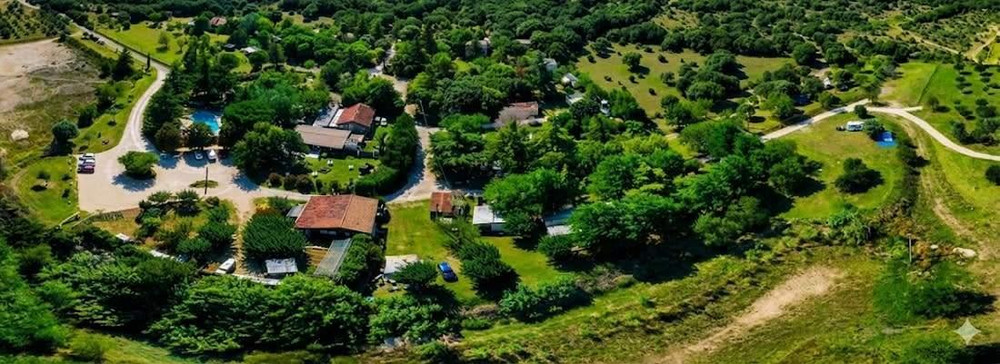